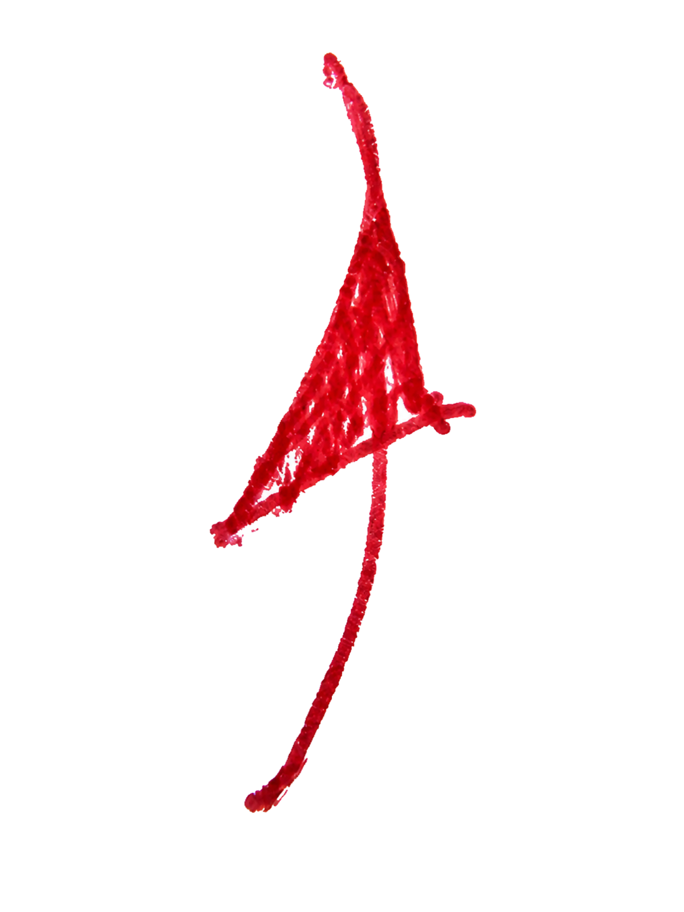
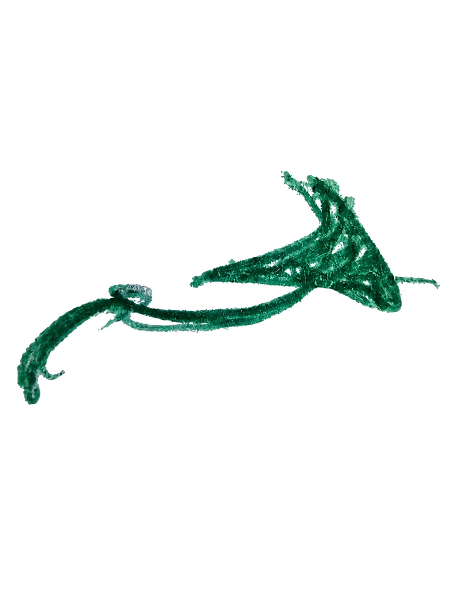

Dessins au stylo, visages tordus, œuvres vivantes.
Carickat est une galerie d’artiste construite comme un carnet vivant : caricatures, recherches au Bic, originaux, prints temporaires, commandes personnalisées et fragments d’atelier.


Choisir une porte d’entrée.
Le site fonctionne comme un atelier ouvert : voir les œuvres, acheter, commander, suivre le processus ou soutenir les prochains chapitres.
Galerie
Caricatures, dessins au stylo, recherches, visages, corps et créatures.
Voir les œuvres 02Boutique
Originaux premium, prints numérotés, collections temporaires et affiches.
Découvrir les offres 03Commande
Demander une caricature, un portrait, une créature ou une idée spéciale.
Lancer une demandeUne œuvre originale. Une collection temporaire.
Chaque grosse œuvre originale peut ouvrir une collection : prints numérotés, posters digitaux et fragments associés. Quand l’original quitte l’atelier, les dérivés liés s’arrêtent aussi.
- Œuvres originales premium
- Prints limités liés à une pièce centrale
- Commandes personnalisées déjà ouvertes
- Collections évolutives par chapitre
La rareté vient du temps visible.
Les œuvres ne sont pas seulement des images finales : elles portent les recherches, les vidéos, les erreurs, les détails et les mois de construction.
Les mondes Carickat.
Chaque vitrine devient une branche du carnet : originaux, animaux, corps, caricatures et héros revisités.
Originaux
Pièces uniques, collections temporaires et prints associés.
Animaux & créatures
Instinct, vivant, formes organiques et recherches animales.
Expression corporelle
Gestes, postures, tensions, silhouettes et corps vivants.
Caricatures
Visages, grimaces, portraits déformés et commandes possibles.
Héros & inspirations
Manga, cinéma, pop culture et réinterprétations personnelles.
Une idée, un visage, une grimace ?
Tu peux déjà demander une caricature personnalisée, un portrait expressif, une créature ou une œuvre spéciale.